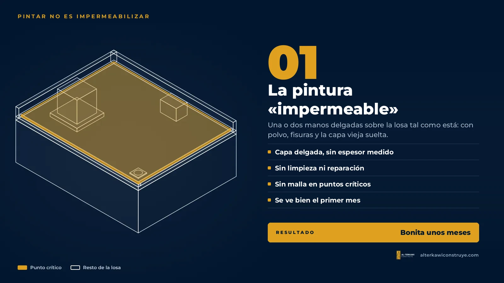
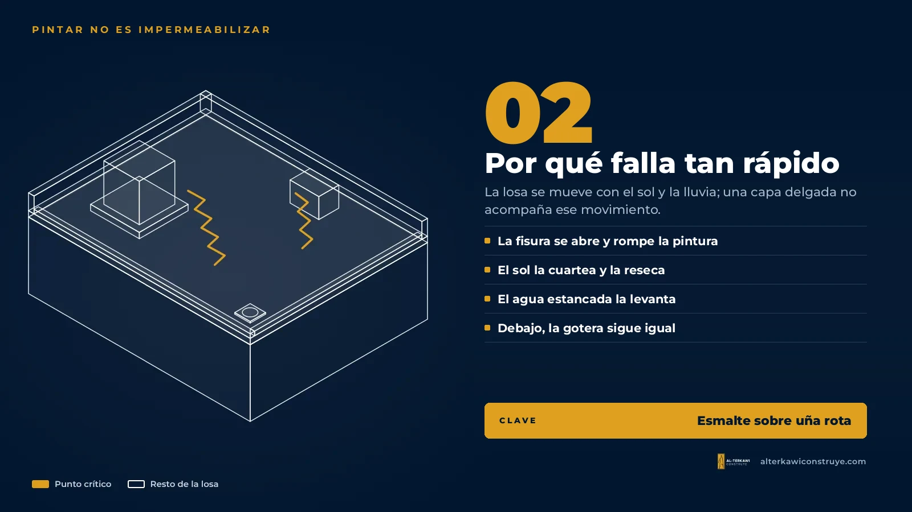
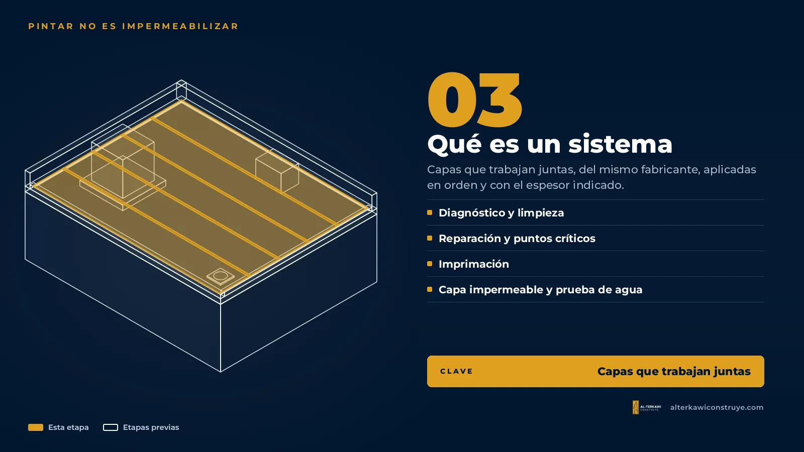
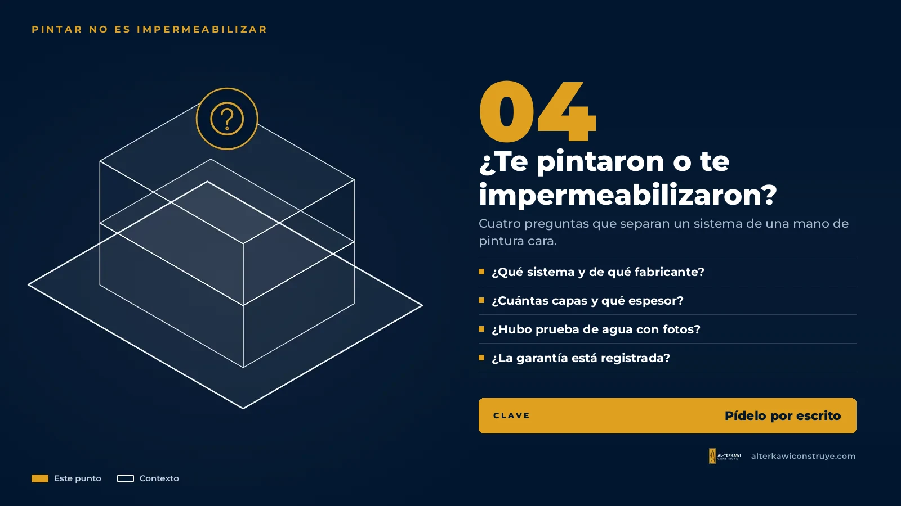

Pintar no es impermeabilizar: la diferencia que evita la gotera
Cada temporada de lluvias pasa lo mismo: alguien sube a la losa con un balde de pintura «impermeable» y una brocha, la deja bonita, y al primer aguacero fuerte la gotera vuelve al mismo lugar. No es mala suerte. Es que pintar no es impermeabilizar. Es como ponerle esmalte a una uña rota: se ve bien unos meses, pero el problema sigue debajo.
La pintura «impermeable»: qué es realmente

Es una pintura más gruesa que la de paredes, que repele el agua mientras está nueva. El problema no es el producto en sí, sino cómo se usa: una o dos manos delgadas sobre la losa tal como está, con polvo, fisuras abiertas y restos de la impermeabilización vieja.
- Nadie mide el espesor que quedó.
- No se limpia ni se repara la superficie antes.
- Los puntos críticos —sumideros, bases de tanques, encuentros con paredes— no llevan refuerzo.
Por qué falla tan rápido

En Guayaquil la losa pasa del sol del mediodía al aguacero en minutos. El concreto se dilata y se contrae, y las fisuras se abren y se cierran con él. Una capa delgada no acompaña ese movimiento: se rompe justo encima de la fisura, que es por donde entra el agua.
- El sol la reseca y la cuartea.
- El agua estancada la ablanda y la levanta.
- Como no se reparó nada debajo, la gotera vuelve al mismo sitio.
Y hay un costo escondido: cuando por fin se impermeabiliza bien, primero hay que retirar toda esa pintura suelta. Lo barato termina pagándose dos veces.
Qué lleva un sistema de verdad

Un sistema de impermeabilización son capas que trabajan juntas, del mismo fabricante, aplicadas en orden y con el espesor que indica la ficha técnica:
- Diagnóstico y limpieza: se encuentra la causa de la gotera y se retira lo suelto.
- Reparación y puntos críticos: fisuras abiertas y rellenas, medias cañas, refuerzo en sumideros y bases.
- Imprimación: la capa que no se ve y que hace que todo lo demás se pegue.
- Capa impermeable y prueba de agua: líquido en varias manos con malla, o membrana asfáltica, según la losa; y al final se inunda la losa por horas para comprobar.
Si quieres ver cada capa con fotos, está en el proceso capa por capa. Y si tienes dudas entre líquido y membrana, en esta comparación.
¿Te pintaron o te impermeabilizaron?

Antes de pagar, haz estas cuatro preguntas. Si la mayoría de respuestas es «no sé» o «no hace falta», estás comprando una mano de pintura cara:
- ¿Qué sistema es y de qué fabricante?
- ¿Cuántas capas lleva y con qué espesor?
- ¿Se hará prueba de agua, con fotos de cada capa?
- ¿La garantía queda registrada a tu nombre? (Te explicamos qué es un escudo registrado.)
Siga leyendo

¿Quieres saber si tu losa necesita un sistema de verdad?
Hacemos el diagnóstico, te decimos qué sistema conviene y te damos tres opciones de precio con garantía registrada.

Arquitecto en Guayaquil, Samborondón y Daule. Impermeabilización de losas y cubiertas con garantía, diseño y obra.